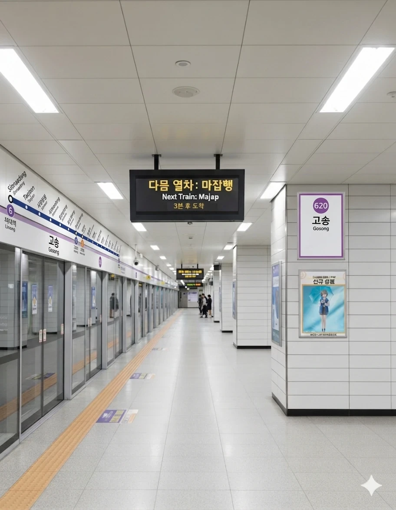

효빈 도시철도 6호선 620번. 효빈광역시 북구 고송동 11-22 지하에 소재한 철도역이다. 2004년 광역시청 이전 이후 폭발적으로 성장한 고송동 신시가지의 핵심이자, 효빈 도시철도 비환승역 승하차량 압도적 1위를 자랑하는 명실상부한 6호선의 수요 깡패 역이다.
고송대로를 따라 신시가지의 중심부를 완벽하게 관통하는 위치에 자리 잡고 있다. 주변에 대단지 브랜드 아파트(자이, 푸르지오, e편한세상 등)와 금융기관, 메가박스 등 대형 상업시설이 빽빽하게 밀집해 있어 출퇴근 시간은 물론 평시에도 엄청난 이용객을 자랑한다. 사실상 효빈광역시 부도심의 역할을 톡톡히 해내며 중앙로에 버금가는 거대 상권을 배후에 두고 있다.
놀랍게도 현재의 고송역은 효빈 도시철도 역사상 두 번째로 '고송'이라는 이름을 쓰는 역이다. 1999년 2호선 개통 당시, 현재의 시청역(2호선, 6호선 환승역) 자리가 본래 '고송역'이라는 이름으로 개업했었다. 그러나 2004년 효빈광역시청이 바로 이 역 앞으로 이전해 오면서 역명이 자연스럽게 '시청역'으로 바뀌었고, '고송'이라는 역명은 한동안 노선도에서 사라져 결번 처리된 것과 다름없는 상태였다.
이후 2016년 6호선이 개통되면서, 기존의 구(舊) 고송역(현 시청역)과는 꽤 거리가 떨어진 고송동 신시가지 한복판에 새로운 역이 신설되었다. 이 역이 고송동 상권의 진정한 중심지 역할을 하게 되면서, 지역 주민들의 강력한 요구에 따라 과거의 이름을 물려받아 현재의 고송역(2대)으로 명명되었다. 이름이 예토전생했다
|
6
고송역 출구 정보
|
||
|---|---|---|
| 번호 | 주요 시설 및 방향 | 비고 |
| 1 | 고송역 푸르지오, 고송 영무예다음 아파트 | |
| 2 | 고송4동 행정복지센터 | |
| 3 | 고송역 자이아파트, 메가박스 고송점, 고송우체국, 북효빈농협 고송역점, 수협은행 고송지점 | 상업시설 밀집 |
| 4 | 고송초, 고송중, 효빈북중, 고송 e편한세상 아파트 1차 | 학군 지역 |
| 고송역 이용객 통계 | ||
|---|---|---|
| 연도 | 일평균 이용객 | 비고 |
| 2020년 | 29,834명 | |
| 2021년 | 30,675명 | |
| 2022년 | 41,051명 | |
| 2023년 | 42,099명 | |
| 2024년 | 43,213명 | 비환승역 1위 |
효빈광역시 비환승역 중 이용객 수 압도적 1위. 환승역이었으면 헬게이트가 열렸을 거다 6호선 전체를 통틀어도 1, 2위를 다투는 기염을 토하며, 신시가지 조성 이후 인구 블랙홀이 된 고송동의 위상을 단적으로 보여주는 지표다.

| 고송교차로 ↑ | ||||
| 하 | ㅣ | ㅣ | 상 | |
| ↓ 건강보험공단 | ||||
| 상 | 6 효빈 도시철도 6호선 | 마잡 방면 |
| 하 | 6 효빈 도시철도 6호선 | 건강보험공단 · 고송나루 방면 |
| 구분 | 정류소명 | 노선 번호 |
|---|---|---|
| 순방향 | 고송 | 22, 23, 221, 222, 231, 241, 251, 271, 291 |
| 역방향 | 고송(건너편) | 22-1, 32, 221-1, 222-1, 321, 421, 521, 721, 921 |
| 고송초등학교(20-123), 고송이편한세상1차(20-124) 정류장 이용 가능 | ||
역이 위치한 '고송동(高松洞, Goseong-dong)'의 한자는 일본어로 '타카마츠'로 읽힌다. 이 때문에 애니메이션 BanG Dream! It's MyGO!!!!!의 주인공 타카마츠 토모리(高松 燈)와 이름이 똑같아, 인근의 등동(燈洞, Tomori)과 엮이며 뱅드림 팬들의 열광적인 성지순례 코스가 되어버렸다.
오타쿠들 사이에서는 "고송역에 와서 평생 6호선 타줄 거지?라고 외치며 맹세하는 것이 국룰"이라는 밈이 퍼졌고, 토모리의 취미를 따라 역 근처 길바닥이나 화단에서 돌멩이를 줍는 팬들이 속출했다. 하다 못해 6호선 마스코트 '라세나' 등신대 옆에 돌멩이를 쌓아두고 기도를 올리는 광기까지 보였다. 이로 인해 역무원들이 "역사 내 돌멩이 무단 투기(?) 및 반출 금지"라는 안내문을 붙였다는 괴담이 돌 정도. 심심찮게 역내 방송 선곡으로 MyGO!!!!! 밴드의 곡을 틀어달라는 민원이 들어오곤 한다.
위와 같은 오타쿠들의 성지화 현상이 기사화되고 인터넷에서 화제가 되자, 지역 내 트러블 메이커이자 꼴보수 극우 정치인으로 악명 높은 윤대환과 그의 아들 윤재훈이 이 역에서 거하게 사고를 친 적이 있다.
특히 아버지 윤대환은 과거 2006년 지방선거에서 단 3표 차이로 효빈시장에 당선되었던 인물이다. 그러나 시장 재임 당시, 본인 일가가 소유한 버스 회사인 '두청운수'의 독점을 유지하고 부흥시키기 위해 6호선 개통을 결사 저지하는 온갖 비열한 술수를 꾸몄다. 결국 수많은 비리가 들통난 것도 모자라, 이를 폭로하려던 비서관을 청부 살인미수한 끔찍한 범죄 사실까지 밝혀지며 당선 1년 만인 2007년에 당선무효형을 선고받고 시장직에서 쫓겨난 최악의 흑역사를 지닌 범죄자다.
2024년 주말 낮, 이들 부자는 추종자 몇 명을 이끌고 고송역 대합실 한복판에 나타나 확성기를 들고 "일본 애니메이션 오타쿠들이 신성한 효빈시의 역사를 더럽히고 있다!", "당장 일본 잡것들을 쫓아내라!"라며 생떼에 가까운 난동을 피웠다. 그러나 평소에도 이들의 극단적인 막말과 과거 악행에 진저리를 치던 일반 시민들과, 하필 주말을 맞아 굿즈를 사러 온 수많은 서브컬처 팬들이 단체로 분노했다.
현장에 있던 사람들은 이들에게 "역명비 한 푼도 안 낸 주제에 어디서 오타쿠를 욕하냐!", "비리 저지른 살인미수범 부자나 잘해라!", "세금 축내지 말고 집에 가라!"라며 사방에서 팩트 폭력과 야유를 쏟아부었다. 심지어 길을 지나던 동네 할머니들까지 시끄럽다며 등짝 스매싱을 날리는 촌극이 벌어졌다. 결국 시민들의 엄청난 기세에 눌려 윤대환, 윤재훈 부자는 얼굴이 붉으락푸르락 해진 채 확성기를 버리다시피 하고 줄행랑을 쳤다. 평생 고송역 출입 금지 이 사건이 SNS에 퍼지면서 두 정치인은 사실상 정계에서 완전히 웃음거리로 전락하고 매장당하는 최후를 맞이했다.